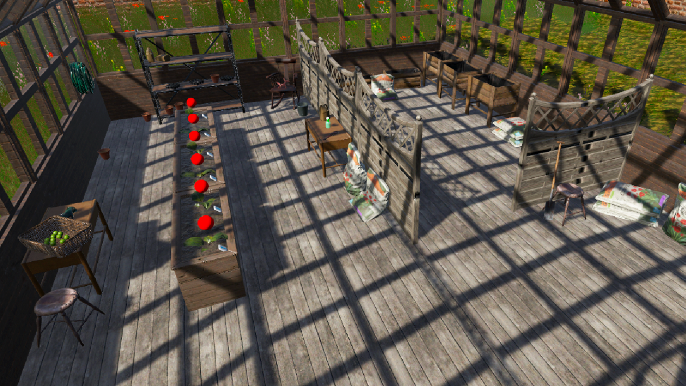
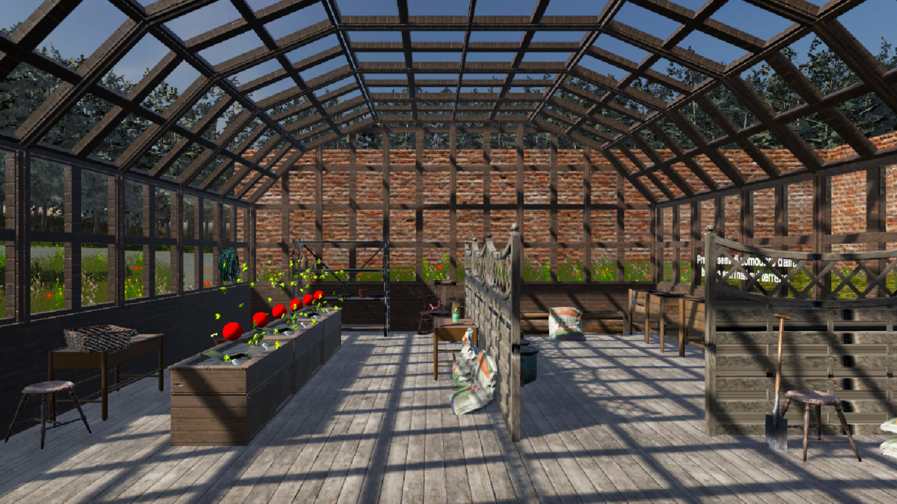
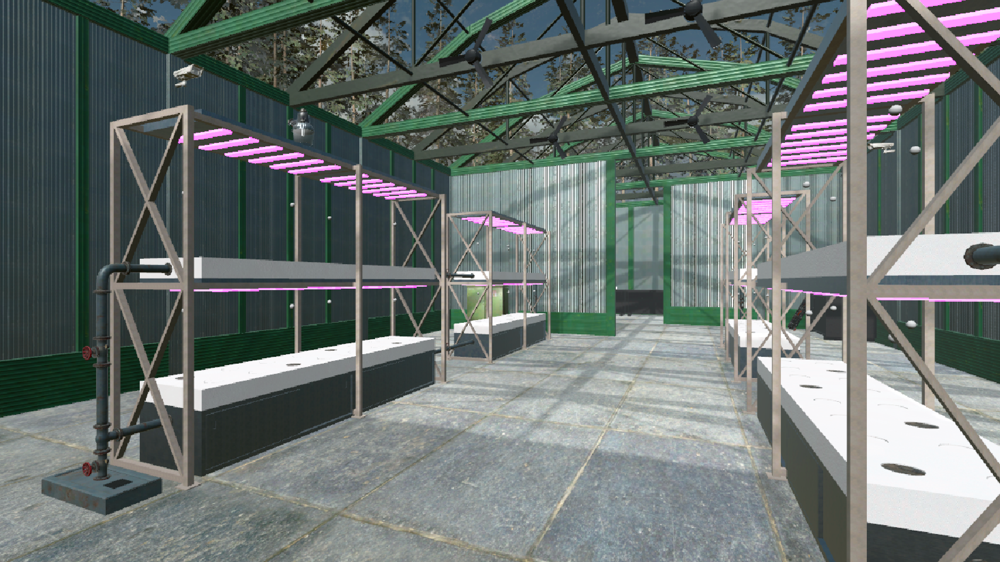
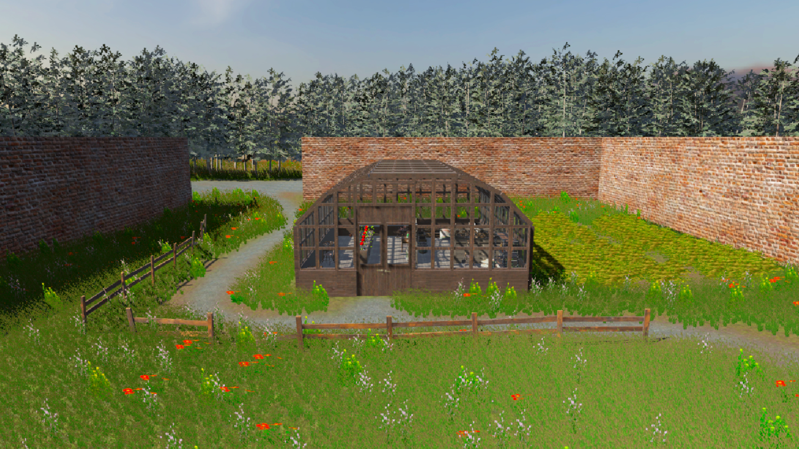

VR · UX / UI Design · 2024
Pianta.to
Training virtual reality for standard and hydroponic cultivation
Pianta.to is an interactive VR application dedicated to teaching and popularising greenhouse growing practices, focusing on innovative hydroponic techniques and widely adopted standard technologies.
The user enters a captivating virtual environment, where they walk through the various stages of tomato cultivation — from setting up the growing area to caring for seedlings, all the way to harvesting the fruits. They can interact with objects, experiment with different irrigation and plant-nutrition techniques, and tackle challenges for optimal plant growth.
With virtual-reality technology, the user experiences an engaging immersive journey that allows them to learn the best practices for cultivating high-quality tomatoes in a fun and stimulating way.

Section 01 · VR Environment
A virtual greenhouse you can actually walk through.
The Unity scene reconstructs both a standard greenhouse and a hydroponic setup side by side. Interactive props guide the player through seeding, irrigation, nutrient mixing and harvest — translating textbook procedures into a tactile experience.
Real-time modelling and lightweight texturing keep the build performant on standalone headsets, while UI cues teach what to do without breaking immersion.

Section 02 · Greenhouse Overview
From the seedling tray to the harvest bin.
The full greenhouse overview was rendered in Unity to evaluate spatial flow, lighting and reachability before exporting to VR — letting the team iterate without putting the headset on every time.
The scene became the production reference for layout, props placement and the navigation logic of the experience.

